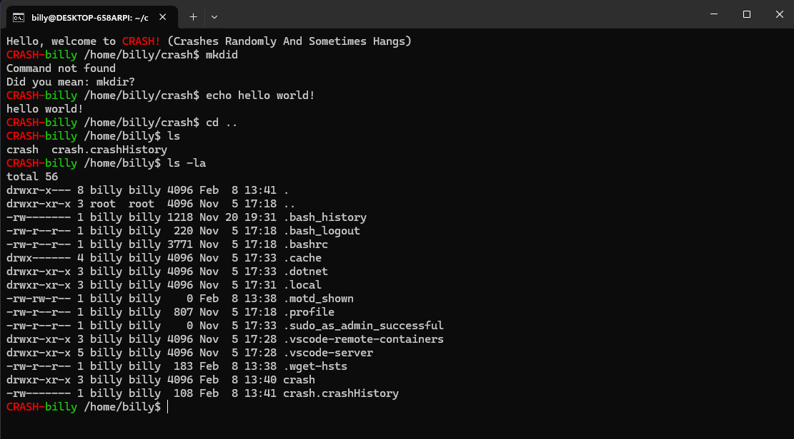

CRASH (Crashes Randomly and Sometimes Hangs) is a custom Linux Shell written in C++ that has many of the same behaviors as bash.
CRASH is a shell I made for my final project in my Operating Systems class. It implements the readline library and is programmed in C++ in a linux enviroment.
The shell can execute commands, manage background processes, keep command history, run startup scripts, and even suggests the closest valid command when a command is not found.

This shows some of the basic features of CRASH.